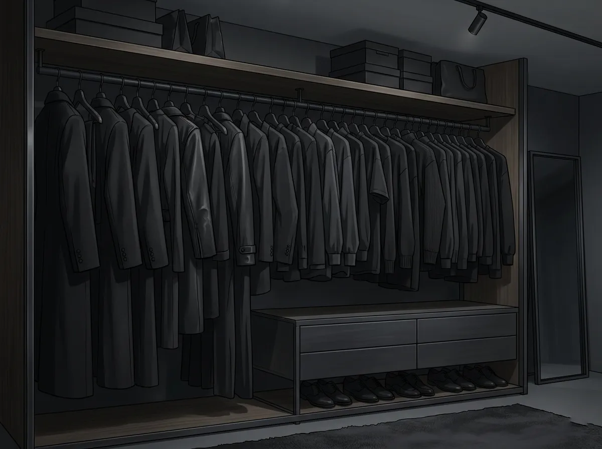
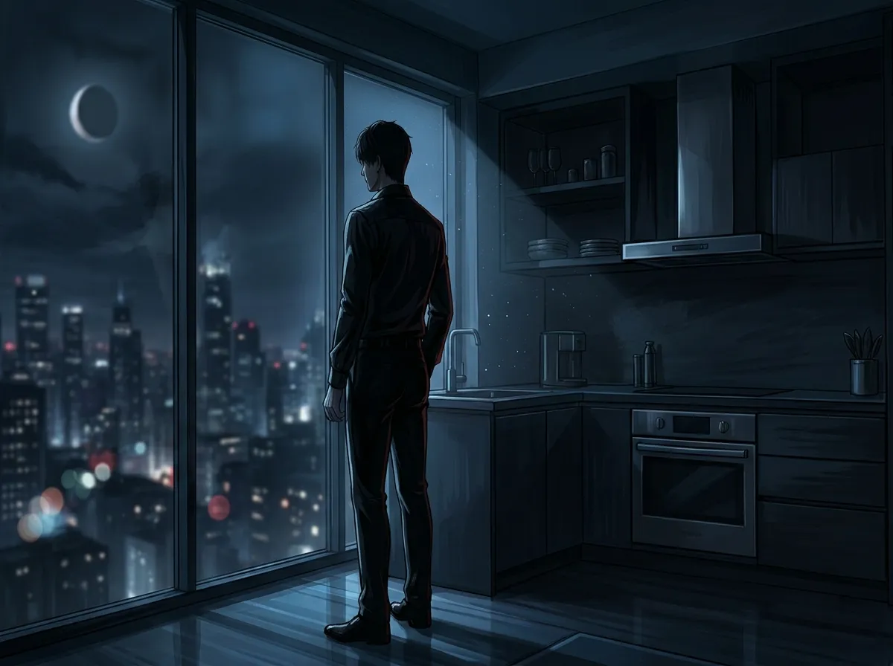
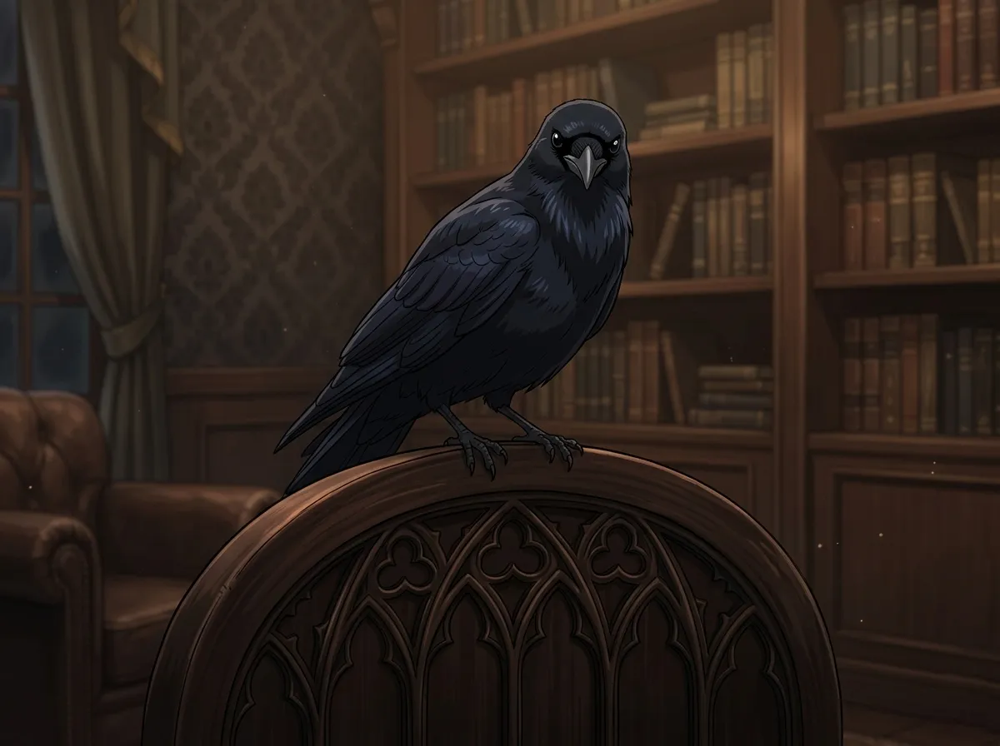
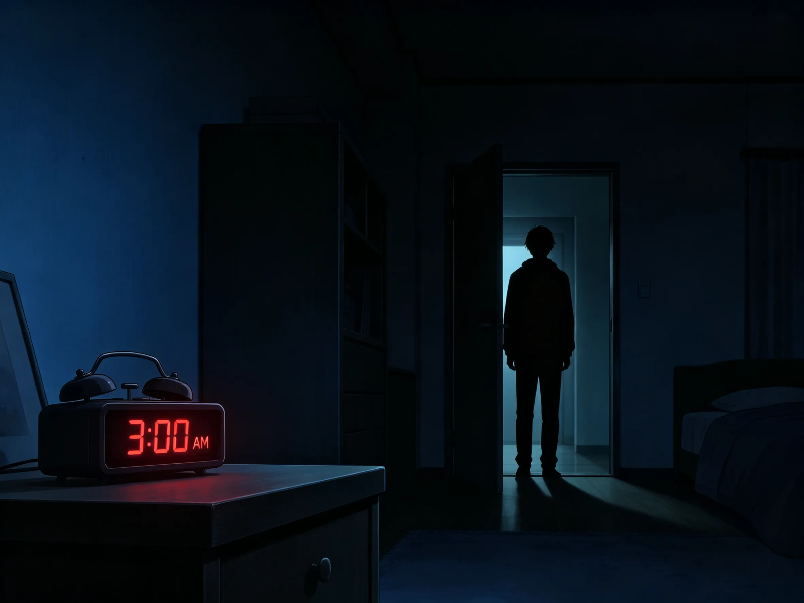
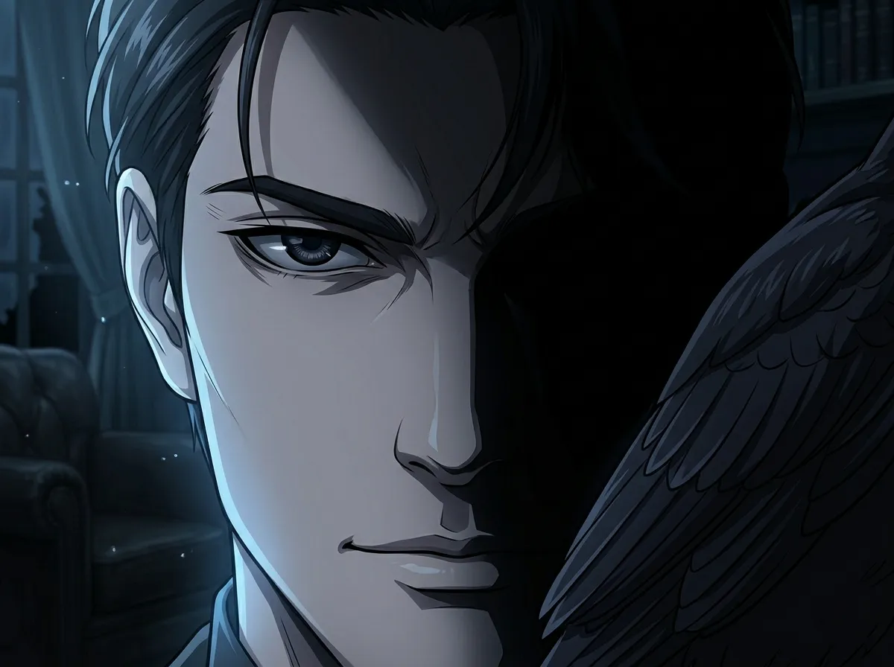
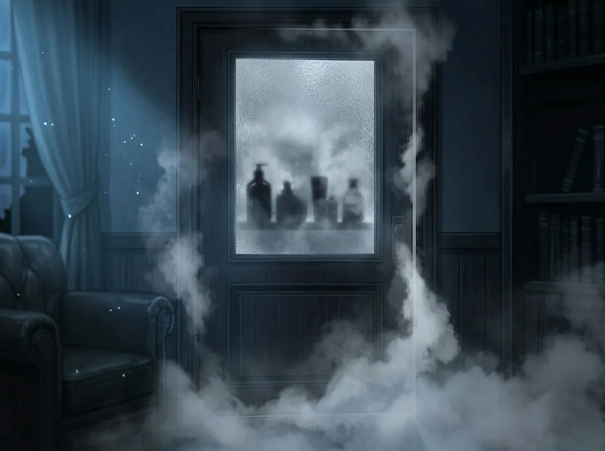
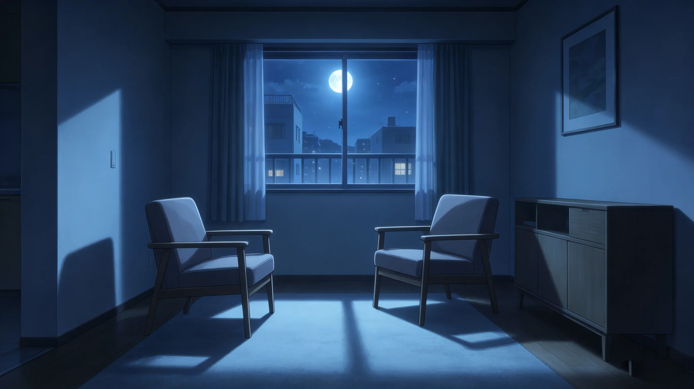

A guide no one asked for — 47 things I learned the hard way
I have been living with Sylus for approximately 47 days.
I have learned 47 things.
This is not a coincidence. This is a cry for help.
If you are reading this, you are probably about to live with him. Or you are trapped in a lease. Or you made a series of poor decisions, like me.
This guide will not teach you how to survive Sylus.
No one survives Sylus.
This guide will teach you how to coexist with him. There is a difference.







Living with Sylus is not easy. It will never be easy.
But it is not impossible.
And sometimes, in the quiet moments, when he's not looking, when Mephisto is asleep, when the apartment is still — you will realize that you wouldn't trade it for anything.
Not even for silence.
Not even for normal.
Not even for a roommate who doesn't stand in the kitchen at 3am.
Because that roommate wouldn't be Sylus.
And somehow, inexplicably, you want Sylus.